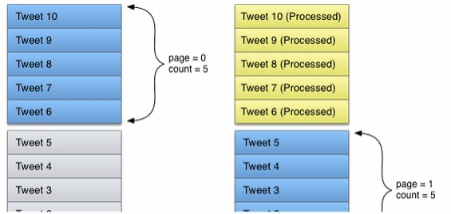
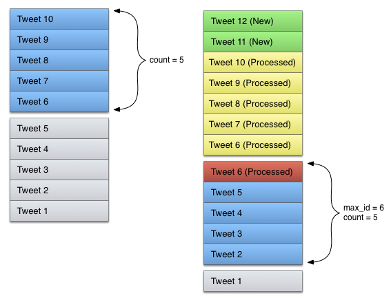
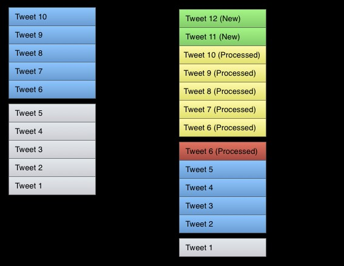
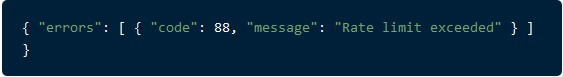

Twitter API
De REST API van Twitter is extreem groot, vandaar dat wij op onze website slechts twee onderdelen ervan beschikbaar stellen. De gekozen onderdelen zijn tijdlijnen en rate limits.
Werken met tijdlijnen
De twitter API heeft meerdere methodes, zoals GET statuses / user_timeline, GET statuses / home_timeline en GET earch / tweets, die een tijdlijn van tweet data geven. Deze tijdlijnen kunnen erg groot worden, daarom zijn er zijn er grenzen voor hoeveel tijdlijn een client applicatie in één request kan opvragen. Applicaties moeten om deze reden meerdere requests sturen om een complete lijst te krijgen.Het probleem van “paging”
De hoeveelheid data die op Twitter aan tijdlijnen toegevoegd wordt is zo groot dat standaard paging benaderingen niet altijd effect werken.
In een ideale wereld is paging erg simpel om te implementeren. We stellen dat er een scenario is waarbij een tijdlijn 10 omgekeerd chronologisch gesorteerde Tweets heeft. Een applicatie probeert om de gehele tijdlijn in twee requests te laden met pages van 5 elementen, waarbij de eerste pagina alseerst wordt gerequest en daarna de tweede. De volgende afbeelding geeft dit scenario weer:

Het probleem van deze methode is dat Twitter tijdlinen constant nieuwe Tweets binnen krijgen. Als bij het vorige geval twee nieuwe tweets toegevoegd worden aan de tijdlijn tussen de request van de twee pagina’s, dan returnt de tweede request twee tweets die we al met bij de vorige call hadden opgehaald:

Als er vijf of meer Tweets in deze tussentijd worden toegevoegd aan de tijdlijn dan wordt de gehele API request nutteloos.
De max_id parameter
Om het hierboven genoemde probleem op te lossen moet er van een andere soort techniek gebruik gemaakt worden, de techniek genaamd cursoring. In plaats van een tijdlijn relatief van bovenaf te lezen, moet een applicatie de tijdlijn relatief tot de ID’s van Tweets die al verwerkt zijn lezen. Dit is mogelijk door gebruik te maken van de max_id request parameter.
Om de max_id correct te gebruiken moet de eerste request van een applicatie aan de tijdlijn alleen een count specificeren. Tijdens het verwerken van requests houdt deze counter het laagste ID dat ontvangen is bij. Dat ID wordt doorgegeven als waarde van de max_id parameter voor de volgende request, die alleen Tweets met een lager ID dan de waarde van max_id ophaald. Merk op dat de Tweet met het correspondeerde ID van max_id ook opnieuw wordt opgehaald.

Op deze manier verminder je de hoeveelheid nutteloze requests en weet je altijd zeker dat je niet een Tweet gemist hebt.
API Rate Limits
Per user of per applicatieRate limiting werkt in de laatste API versie op een per-user basis, of beter gezgd per access token in de control. Als een methode 15 requests per rate limit window toestaat, dan staat het het dus 15 requests per window per access token toe. Deze manier is vergelijkbaar met de API v1 die per-user/per-token met Oauth werkte.
Bij gebruik van application-only authentificatie worden rate limits globaal voor de hele applicatie bepaald. Als een methode 15 requests per rate limit window toestaat, dan staat het namens de applicatie 15 requests per window toe. Dit limiet wordt als apart beschouwd van de per-user limieten.
15 minuut windows
In de 1.1 versie van de API worden rate limits verdeeld in 15 minuuts intervallen, dit is een veranderign van de 60 minuutsblokken die er in versie 1.0 waren. Verder hebben alle 1.1 eindpunten een authentificatie, hierdoor bestaat het concept van unauthenticated calls en rate limits niet meer.
In de eerdere versies van de API kon een Oauth applicatie 350 GET-based requests per uur per token maken. In versie 1.1 is een breder spectrum van requests mogelijk door per-method request limits. Er zijn twee vormen van GET requests mogelijk: 15 calls elke 15 minuten en 180 calls per 15 minuten.
Momenteel ligt de rate limit van zoekopdrachten op 180 querues per window van 15 minuten.
HTTP Headers en Response Codes
HTTP headers zijn contextueel. Bij gebruik van een app-only authentificatie geven ze de rate limit van de applicatie weer. Bij gebruik van een user-based authentificatie geeft de header de rate limit van de user-applicatie weer.
Mogelijke informatie die in de header staat is:
• X-Rate-Limit-Limit: De rate limit grens voor een bepaald request
• X-Rate-Limit-Remaining: De hoeveelheid requests, van de window van 15 minuten, die nog over zijn
• X-Rate-Limit-Reset: De hoeveelheid window die nog over is voordat de rate limit gereset wordt
Als de rate limit op een eindpunt gehaald wordt dan stuurt de API een HTTP 429 “Too many requests” code terug. Deze respons heeft de volgende body:
